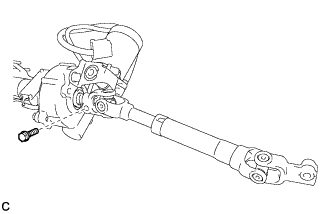
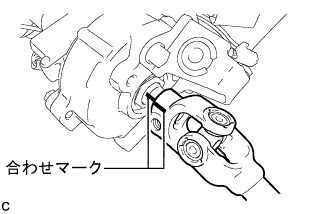
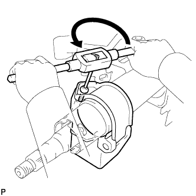

Steering Column Assembly Disassembly |
| 1. Remove Steering Intermediate Shaft Assembly NO.2 |
 |
Remove the bolt from steering intermediate shaft assembly No.2.
 |
Put matchmarks on steering intermediate shaft assembly No.2 and the steering column assembly.
Remove steering intermediate shaft assembly No.2 from the steering column assembly.
| 2. Remove Steering Lock Actuator Assembly |
Secure the steering column assembly in a vise with aluminum plates.
Using a drill, make a hole in the steering lock set bolt for a reverse tap.
 |
Using a tap wrench, remove the steering lock set bolt and remove the steering lock actuator.